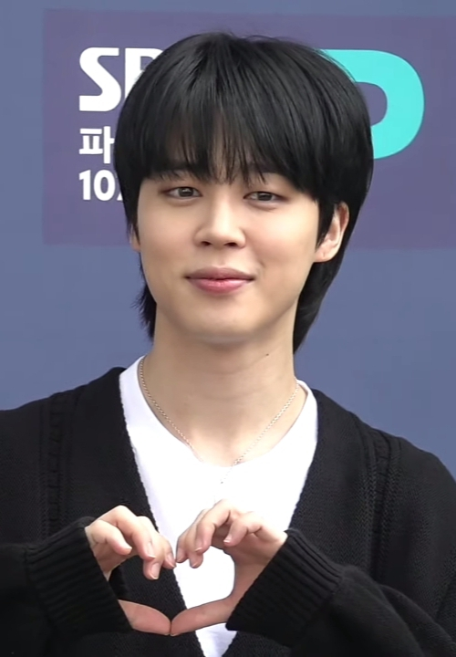

BTS，全稱 Bangtan Sonyeondan（韓語：방탄소년단），在國際上也被稱為 Bangtan Boys，是由 Big Hit Entertainment（現為 HYBE Corporation）於2013年推出的韓國男子音樂組合。團體名稱的意思是“防彈少年團”，意味著他們要保護青少年免受生活壓力的侵襲。BTS 成員包括 Jin, Suga, J-Hope, RM, Jimin, V, 和 Jungkook。
成員:
金碩珍（Jin）
閔玧其（Suga）
鄭號錫（j-hope）

金南俊(RM)
朴智旻（jimin）
金泰亨(V)
田柾國(Jungkook)
金碩珍（Jin）：
金碩珍（韓語：김석진），藝名 Jin，是韓國男子音樂組合 BTS 的成員之一。他於2013年6月13日隨組合出道，主要擔任主唱的角色。
早期生活和訓練:
Jin 於1992年12月4日出生於韓國京畿道高陽市。他在加入 Big Hit Entertainment 成為練習生之前，曾就讀於庆熙大学，主修表演藝術。原本對表演有著濃厚興趣的 Jin 通過偶然的機會被星探發掘並進入了音樂領域，進行了嚴格的歌唱和舞蹈訓練。
出道與BTS:
Jin 與 BTS 成員一起在 2013 年以單曲《No More Dream》正式出道。自出道以來，他以其溫暖的聲音和穩定的歌唱技巧在團隊中扮演著重要角色。Jin 也獨立發表了幾首自作曲，如《Awake》、《Epiphany》和《Moon》，展現了他的音樂才華和情感深度。
特別活動和合作:
作為 BTS 的成員，Jin 參與了多項國內外的音樂表演、獎項典禮和社會活動。他的公開活動不僅限於音樂演出，還包括參與多個電視節目和公益活動，增加了他的公眾曝光度和影響力。
影響力和公眾形象:
Jin 以其優雅和幽默的性格在全球範圍內擁有廣泛的粉絲基礎。他的公眾形象正面且具有高度的親和力，常被粉絲親切地稱為“Worldwide Handsome”。他的專業精神和對音樂的熱情使他在國際音樂場景中獲得了尊重和愛戴。
閔玧其（Suga）：
閔玧其（韓語：민윤기），藝名 Suga，是韓國男子音樂組合 BTS 的成員之一。他於2013年6月13日隨組合出道，主要擔任饒舌手和音樂製作人。
早期生活和訓練:
Suga 於1993年3月9日出生於韓國大邱。在成為音樂人之前，他已經對音樂製作表現出極大的熱情和才能。Suga 在高中時期開始作為地下饒舌手和製作人活動，在此期間他積累了豐富的音樂製作經驗。他後來加入 Big Hit Entertainment，成為練習生並接受了全面的音樂和表演訓練。
出道與BTS:
Suga 與 BTS 成員一起在 2013 年以單曲《No More Dream》正式出道。他不僅負責饒舌演出，還參與了組合大部分歌曲的創作和製作，顯示了他在音樂製作方面的深厚才華。
特別活動和合作:
Suga 以其音樂才能在團隊內外都取得了認可。他以 Agust D 的名義發布了個人作品，其中包括深受好評的 mixtapes《Agust D》和《D-2》，這些作品展現了他的個人音樂風格和藝術深度。此外，Suga 也與多位藝術家合作，包括 IU、Heize 等，進一步確立了他在音樂產業的影響力。
影響力和公眾形象:
Suga 以其直率的性格和真誠的音樂風格受到粉絲的愛戴。他在公開場合談論心理健康的重要性，並透過自己的音樂傳達情感和經歷，這使他成為了粉絲和公眾的精神支柱。他的作品常常帶有深刻的社會意識和個人感悟，使他在全球範圍內具有廣泛的影響力。
鄭號錫（j-hope）：
J-Hope（本名：鄭號錫，韓語：정호석）是韓國男子音樂組合 BTS 的成員之一。他於2013年6月13日隨組合出道，主要擔任主舞者和饒舌手。
早期生活和訓練:
J-Hope 於1994年2月18日出生於韓國光州。在成為 Big Hit Entertainment 的練習生之前，他已經是一名才華洋溢的街舞選手，並在多個舞蹈比賽中獲獎。他接受了廣泛的舞蹈和音樂訓練，為他的偶像生涯做好了準備。
出道與BTS:
J-Hope 與 BTS 成員一起在 2013 年以單曲《No More Dream》正式出道。他以其卓越的舞蹈技巧和充滿活力的饒舌在團隊中脫穎而出。
特別活動和合作:
J-Hope 在團隊之外也發展了個人音樂事業，他的首張個人 mixtape《Hope World》獲得了全球的成功。此外，他也參與了多個公益活動，並積極推動文化交流。
影響力和公眾形象:
J-Hope 以其陽光的個性和正能量而受到粉絲的愛戴，他的音樂和舞蹈在全球範圍內具有廣泛的影響力。
金南俊(RM)：
RM（本名：金南俊，韓語：김남준），是 BTS 的隊長和主饒舌手。他於2013年隨 BTS 出道。
早期生活和訓練:
RM 於1994年9月12日出生於韓國首爾。他在音樂方面的天賦從小就非常明顯，特別是在饒舌方面。在加入 Big Hit Entertainment 之前，他已經是地下饒舌界的一員。
出道與BTS:
作為 BTS 的隊長，RM 不僅負責領導團隊，還參與了絕大多數歌曲的作詞和製作，深受國內外樂迷的尊重。
特別活動和合作:
RM 以其深刻的歌詞和卓越的音樂才能在音樂界獲得了高度認可。他與多位國際藝術家合作，推動了音樂和文化的交流。
影響力和公眾形象:
RM 以其智慧和哲學深度在公眾中建立了積極的形象，他經常在公開演講中分享其對生活和音樂的看法。
朴智旻(jimin)：
Jimin（本名：朴智旻，韓語：박지민）是韓國男子音樂組合 BTS 的成員之一，擔任主舞者和主唱。他於2013年6月13日隨 BTS 出道，以其卓越的舞蹈技巧和感性的歌聲在團隊和樂迷中擁有重要地位。
早期生活和訓練:
Jimin 於1995年10月13日出生於韓國釜山，是家中的獨子。他的舞蹈之路始於釜山高中的現代舞蹈班，這段經歷為他日後的舞蹈生涯奠定了堅實的基礎。Jimin 的舞蹈才能在學校已經表現得相當出色，他參加了多次舞蹈比賽並獲得了獎項。隨後，他轉到首爾藝術高等學校進行更專業的舞蹈和音樂訓練，最終在那裡被 Big Hit Entertainment 的星探發現，並開始了他的練習生生涯。
出道與BTS:
自從2013年以《No More Dream》一曲隨 BTS 出道以來，Jimin 就以其柔和且充滿感情的歌聲和精湛的舞蹈技巧贏得了眾多粉絲的心。在 BTS 的多首作品中，Jimin 不僅擔任主唱，還參與了舞蹈編排，展示了他在表演藝術方面的全面才能。
特別活動和合作:
Jimin 在 BTS 的全球巡演和音樂錄影帶中經常擔任焦點舞者，他的舞蹈表演總能深刻地傳達歌曲的情感。除此之外，他也在團隊的創作中發揮作用，參與歌曲的製作和歌詞創作，如在專輯《Wings》中的個人曲目《Lie》。
影響力和公眾形象:
Jimin 不僅以其舞蹈和歌唱才能聞名，他的公眾形象也因其親和力和謙虛的態度而深受喜愛。他在社交媒體上擁有廣泛的追隨者，經常與粉絲分享生活和感想，建立了深厚的情感連結。此外，Jimin 也積極參與慈善和公益活動，用自己的影響力推動正面的社會變革。
金泰亨(V)：
V（本名：金泰亨，韓語：김태형），是韓國男子音樂組合 BTS 的成員之一。他於2013年6月13日隨 BTS 出道，擔任主唱及視覺代表。
早期生活和訓練:
V 於1995年12月30日出生於韓國大田廣域市。從小就對藝術有著極大的熱情，特別是在音樂和攝影方面。在高中時，V 通過了 Big Hit Entertainment 的試鏡，並從家鄉大田轉到首爾，開始了他的練習生生涯。在成為練習生期間，他接受了全面的聲樂訓練，並學習了舞蹈和表演技巧，為未來的偶像生涯做好準備。
出道與BTS:
V 在 BTS 的官方出道曲《No More Dream》中以其獨特的低沉嗓音和魅力十足的舞台表現迅速獲得了公眾的關注。他不僅在團體的多首歌曲中展現了他的歌唱才能，而且還在音樂錄影帶和現場表演中表現出了卓越的表演藝術才華。
特別活動和合作:
V 已經發表了幾首個人作品，包括深受歡迎的單曲《Stigma》和《Singularity》，這些作品不僅展示了他作為歌手的深厚實力，還展現了他作為音樂家的個性和風格。除此之外，他在藝術攝影方面也有顯著的興趣和才能，並已在多個場合展示了自己的作品。
影響力和公眾形象:
V 以其多才多藝和獨特的藝術氣質在全球範圍內擁有廣泛的粉絲基礎。他的親和力和多面性使他在不同年齡層和文化中都極具吸引力。V 也以其在時尚界的影響力而聞名，經常出現在多個高端時尚活動和雜誌封面上。
田柾國(Jungkook)：
Jungkook（本名：田柾國，韓語：전정국），是韓國男子音樂組合 BTS 的主唱之一，並在團隊中扮演多種角色，包括主舞者和副饒舌手。他於2013年6月13日隨 BTS 出道，以全能藝術家的身份聞名。
早期生活和訓練:
Jungkook 於1997年9月1日出生於韓國釜山。他從小就展現出對音樂、舞蹈和運動的熱情。在初中時，Jungkook 參加了韓國全國超級星選秀「Superstar K」，雖然最終沒有進入決賽，但他的才能得到了 Big Hit Entertainment 的注意，從而開始了他的練習生生活。在成為練習生後，Jungkook 移居首爾，接受了全面的舞蹈、聲樂和表演訓練。
出道與BTS:
Jungkook 在 BTS 的官方出道作《No More Dream》中即展示了他的多才多藝，不僅擔任主唱，還參與舞蹈和一部分饒舌表演。他的能力在團隊中得到了充分的發揮，無論是在音樂錄影帶、現場演出還是專輯錄制中，都扮演著核心角色。
特別活動和合作:
作為 BTS 的黃金忙內，Jungkook 不僅在音樂方面有顯著貢獻，還積極參與各種媒體節目和國際活動，展示了他的多面性和親和力。他參與了多首熱門歌曲的創作和製作，並與國際藝術家合作，如與 Charlie Puth 在舞台上的合作表演等。
影響力和公眾形象:
Jungkook 因其出色的藝術才能和健康的生活方式而深受粉絲喜愛。他以其甜美的嗓音、精湛的舞蹈技巧和運動能力，在全球範圍內擁有極高的人氣。此外，他在社交媒體上的活躍也加深了與粉絲的聯繫，使他成為全球青年文化的偶像。